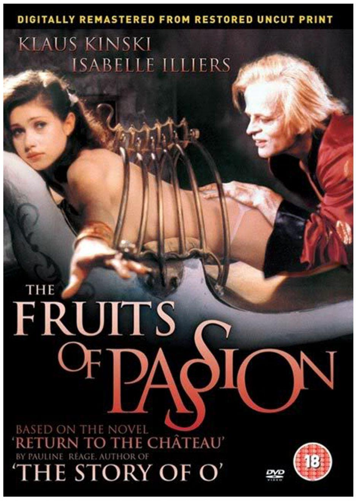

Sala Redenção visitar
- 
OS FRUTOS DA PAIXÃO
Japão / 1981 / 90 min
11 de setembro | segunda-feira | 16h
Direção: Shuji Terayama
Uma menina gosta de um homem mais velho. Ele exige que ela vá em um bordel, como prova de que ela o ama.
Mais informações
CineBancários visitar
Não há sessões nas segundas-feiras
ANGELA
Brasil/ Drama/ 2023/ 104min
19h
Direção: Hugo Prata
Sinopse: Após uma tumultuada separação e ter que ceder a guarda dos seus três filhos, a famosa socialite Ângela Diniz conhece Raul, e acredita ter encontrado alguém que ama seu espírito livre tanto quanto ela. A atração avassaladora fez o casal largar tudo e viver o sonho de reconstruir suas vidas na casa de praia. Mas a vida tranquila rapidamente se transforma quando Raul começa a se mostrar um homem agressivo, violento e controlador. A relação declina para o abuso e a violência, dando origem a um dos casos de assassinato mais famosos de todos os tempos no Brasil.
Mais informações
RETRATOS FANTASMAS
Brasil, 2023, 91min | Documentário
17h
Direção: DE Kleber Mendonça Filho
12 anos
O quinto filme do diretor é uma visão pessoal sobre memória e cotidiano. A partir de muito material de arquivo, próprio e pertencente a instituições, ele costura lembranças sobre o apartamento onde cresceu e sobre os antigos cinemas de rua de Recife, o que acaba revelando algumas verdades sobre a vida em sociedade. O documentário estreou no Festival de Cannes, em maio, e abriu o Festival de Gramado no sábado passado.
Mais informações
PARA ONDE VOAM AS FEITICEIRAS
Brasil/ Documentário/ 2020/ 89min
15h
Direção: Eliane Caffé, Carla Caffé e Beto Amaral
Sinopse: Para onde voam as feiticeiras acompanha a deriva de encenações e improvisos de sete artistas pelas ruas do centro de São Paulo em uma experiência cinematográfica que torna visível a persistência de preconceitos arcaicos de gênero e raça no imaginário comum. No centro desta narrativa polifônica está a importância da resistência política através das alianças de luta comum entre coletivos LGBTQIA+, negritude, indígenas e trabalhadores sem teto.
Mais informações